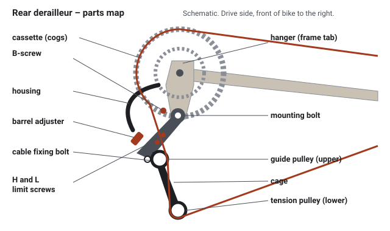
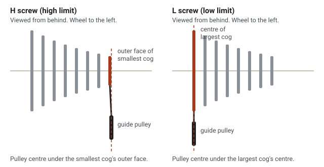
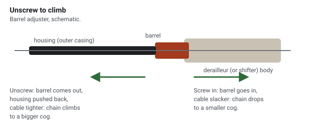

The rear derailleur in five words
By the end you can say the rear method from memory – each step, its gear and its proof – and you are ready to fit the new Altus on Sophia's bike.
Why this first
Sophia's bike is the simplest of your three jobs: one new rear derailleur (the arm under the back gears that moves the chain from gear to gear). Her bike has a hanger, a 7-speed cassette and one chainring (the toothed ring at the pedals), so there is no front derailleur to worry about. Her twist-grip shifter has no barrel adjuster, so you tune with the one on the derailleur. The same five steps then set up the 105 rear on the Defy and fix the Boardman, so learning them once pays three times. The full step-by-step is in the derailleur guide; words you have not met are in the glossary.
The parts you need

- Cog, cassette
- Each toothed wheel on the back wheel is a cog; the stack is the cassette. Smallest cog = fastest gear; largest cog = easiest climbing gear.
- Cage, guide pulley
- The cage is the pair of plates holding two small toothed wheels. The upper one, nearest the cogs, is the guide pulley: every setting is judged by where it sits.1
- H and L screws (limit screws)
- Two screws that stop the derailleur going too far: H at the smallest cog, L at the largest.2
- Wall
- Teacher's word for the stop a limit screw sets: the furthest the derailleur can travel that way.
- Hanger
- The small metal tab on the frame that the derailleur bolts to.1
- B-screw
- A screw resting on the hanger that tilts the derailleur, setting the gap between the guide pulley and the cogs.1
- Barrel adjuster
- A ridged tube where the cable housing ends. Turning it changes the cable's tension. Sophia's bike may have two – one on the derailleur and, on a two-lever trigger, one on the shifter; either one does the job.2,4
- Free play
- The first part of a shift lever's movement, before it starts pulling the cable.3
The five words
"High wire, low bee, barrel roll."
The hooks on this page are your teacher's own phrases; the rules behind them are sourced.
With the cable slack, a spring parks the derailleur on the smallest cog. So the H screw, which guards that cog, is the only thing you can set before the cable goes on. Shimano's sheets use this order.3,4
| Word | Gear | What you turn | You know it's right when |
|---|---|---|---|
| High | smallest cog | H screw until the guide pulley's centre is under the outer face of the smallest cog3 | The pulley lines up as in the drawing below (the chain is not on yet)3 |
| Wire | smallest cog, shifter fully released | Fit the chain, then clamp the cable taut3 | The chain runs quietly on the smallest cog without rubbing the next one (this proves High); one click moves the chain1 |
| Low | largest cog | L screw until the guide pulley's centre is under the centre of the largest cog3,5 | A hard push on the lever does not move the cage further in1 |
| Bee | largest cog | B-screw, cranks turning backwards, until the guide pulley is as close as it can be without touching. No millimetre figure overrides this3,4 | The pulley clears the largest cog, and shifts onto it are crisp1 |
| Barrel | 2nd smallest cog | Barrel adjuster until, with the lever pressed just to the end of its free play, the chain touches the 3rd cog and rattles lightly3,4 | Every click moves one cog, both ways, with no rattle |
| Roll | every gear | Nothing: listen, look, push | Quiet in every gear; pulley where the drawing shows; the push check holds1 |

Three rules for which way to turn
Tighten a limit screw: its wall closes in. Screwing H or L in stops the derailleur sooner.2
Tighten B = Bigger gap. Screwing the B-screw in moves the guide pulley away from the cogs. A pulley that clatters (a rattling tick on the teeth as you pedal) is touching, so too close (teacher's synthesis, after Shimano's "not so close that it touches").1,3
Unscrew to climb. Unscrewing the barrel tightens the cable and moves the chain towards the bigger cogs. Turn it a quarter turn at a time (a full turn if the chain does not move at all).1,2

Practice: from memory
Cover the table above (scroll it away) and answer. Getting it out of your head is what makes it stay there; the first try counts.
1. Which is the right order for a rear derailleur?
"High wire, low bee, barrel roll." H first, because with the cable slack the spring parks the derailleur on the smallest cog – H's wall.3
2. On a bike with two chainrings, which gear do you set the H screw in?
H is for High gear, the fast one: smallest cog. The small ring with the largest cog is for L and the B-screw; the 2nd smallest cog is for the barrel.3
3. When H is right, where is the guide pulley's centre?
Shimano and SRAM give the same target: the outer face of the smallest cog. (For L it is the centre of the largest cog.)3,5
4. Shifts to a bigger cog are slow. What do you do with the barrel adjuster?
Unscrew to climb: a quarter turn of the barrel at a time. The L screw only matters if the chain cannot reach the largest cog at all.1
5. The guide pulley clatters on the largest cog. What is the fix?
Tighten B = Bigger gap. The clatter means the pulley is too close to the largest cog.1
6. Which mistake can put the chain into the spokes?
L guards the largest cog, next to the spokes. That is why the push check after Low is never skipped – on Sophia's bike, do it yourself before every handover.1,2
On the bike
Your win for this lesson: Sophia's new Altus fitted and shifting cleanly. Open the derailleur guide and pick "Sophia's bike" in the bar at the top. Then work through, ticking as you go:
- Check these on your bikes first – all done for Sophia's bike; read them once anyway.
- Four things adjustment cannot fix – hanger, chain wear, cable, parts that match.
- Remove and fit, then adjust: say each word out loud before you do its step.
Tomorrow, before you touch anything, say the five words and the three rules out loud, then try the guide's self-test. Again in a week, before the Defy.
Primary source: Park Tool, "Rear Derailleur Adjustment". It has a photograph for every step above. Read it once before you start on Sophia's bike.
Anything unclear, or the bike does not match the pictures? Ask your teacher (this agent) – a photo of the derailleur from behind helps.